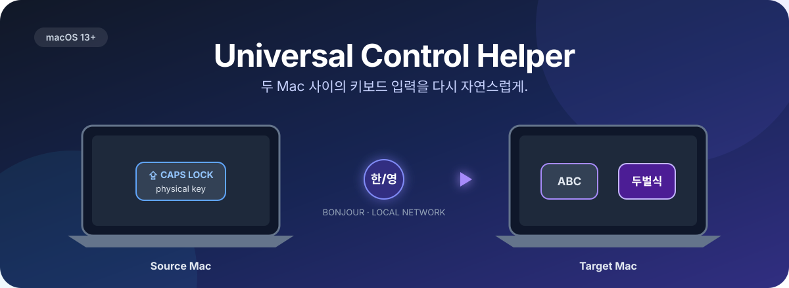

두 Mac 사이의
Caps Lock 한/영 전환을 되살립니다
커서는 자연스럽게 다른 Mac으로 넘어갔는데, 손에 익은 입력 방식은 따라오지 않나요? Universal Control Helper가 끊어진 입력 경험의 마지막 한 조각을 이어 줍니다.



설치는 명령어 한 줄이면 충분합니다
최신 Release를 내려받아 SHA-256 체크섬과 앱 서명을 확인한 뒤 /Applications에 설치합니다.
curl -fsSL https://github.com/feelgom/universal-control-helper/releases/latest/download/install.sh | bash
실행 전 스크립트 내용을 확인하려면 curl ... -o install.sh로 내려받아 검토한 뒤 실행하세요.
자동 실행 없이 설치하려면 --no-launch, 다른 폴더에 설치하려면 --install-dir 옵션을 사용할 수 있습니다.
스크립트 대신 직접 설치하려면 최신 Release에서
UniversalControlHelper-macOS-universal.zip을 내려받아 압축을 풀고 앱을 /Applications로 옮기면 됩니다.
설치 전 확인할 것
- 운영체제macOS 13 이상
- 입력 조합ABC ↔ 두벌식
- 네트워크두 Mac이 같은 신뢰된 LAN
- Universal Control두 Mac 모두 활성화
- 라이선스MIT · 무료
Universal Control은 커서를 옮겨주지만, 입력 습관까지 옮겨주지는 않습니다
Apple Universal Control은 키보드와 트랙패드 하나로 Mac 두 대를 오가게 해주지만, 한국어 사용자가 매일 쓰는 Caps Lock 한/영 전환은 다른 Mac에서 먹통이 되곤 합니다.
커서를 다른 Mac으로 옮긴 뒤 평소처럼 Caps Lock을 누릅니다
한/영이 바뀌지 않은 채로 입력이 시작됩니다
잘못 입력된 글자를 지우고 다시 씁니다
입력 메뉴나 다른 단축키를 찾아 수동으로 전환합니다
Universal Control Helper 없이
- ✕다른 Mac에서 Caps Lock을 눌러도 한/영이 바뀌지 않음
- ✕입력 언어가 달라 오타를 낸 뒤 다시 작성
- ✕입력 메뉴를 클릭하거나 다른 단축키를 따로 기억해야 함
- ✕문서·메신저·터미널을 오갈 때마다 같은 흐름 반복
Universal Control Helper 사용 후
- ✓어느 Mac에서든 평소처럼 Caps Lock 한 번
- ✓두 Mac의 ABC ↔ 두벌식 상태를 자동 동기화
- ✓커서가 어디에 있든 같은 근육 기억을 유지
- ✓메뉴 막대에서 조용히 실행, 필요할 때 언제든 끄기 가능
물리 Caps Lock을 감지해, 같은 네트워크의 다른 Mac에 전달합니다
키보드가 연결된 Mac이 Source, 조작 대상이 Target입니다. 역할과 페어링 코드만 맞추면 나머지는 자동으로 동기화됩니다.
| Mac | 역할 | 필요한 권한 | 할 일 |
|---|---|---|---|
| 키보드가 연결된 Mac | Source | 입력 모니터링, 로컬 네트워크 | 자동 생성된 코드 확인 |
| 조작할 다른 Mac | Target | 로컬 네트워크 | Source의 코드 입력 |
조용히, 필요한 것만
Caps Lock과 입력 소스 상태 외에는 아무것도 들여다보지 않습니다.
일반 키 입력 미처리
물리 Caps Lock 눌림만 감지하며, 그 외 키 입력은 그대로 통과시킵니다.
수집하지 않음
입력한 텍스트, 클립보드, 마우스 이벤트를 수집하거나 서버로 전송하지 않습니다.
로컬 네트워크 한정
같은 LAN의 Bonjour와 페어링 코드로만 연결되며, 외부 서버를 거치지 않습니다.
코드는 전부 공개되어 있습니다
입력 모니터링 권한을 요청하는 앱이기에, 무엇을 하고 무엇을 하지 않는지 코드로 직접 확인할 수 있어야 한다고 생각합니다.
MIT 오픈소스
전체 소스코드가 GitHub에 공개되어 있고 누구나 검토·기여할 수 있습니다.
Developer ID 서명 · 공증
정식 빌드는 Apple Developer ID로 서명하고 공증을 거쳐 배포됩니다.
Sparkle 자동 업데이트
EdDSA로 서명된 업데이트만 GitHub Release에서 확인·적용합니다.
비공개 보안 신고
취약점은 공개 이슈 대신 보안 정책의 비공개 채널로 제보받습니다.